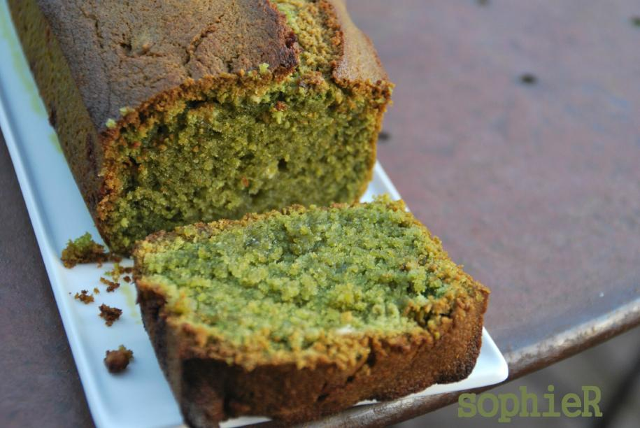
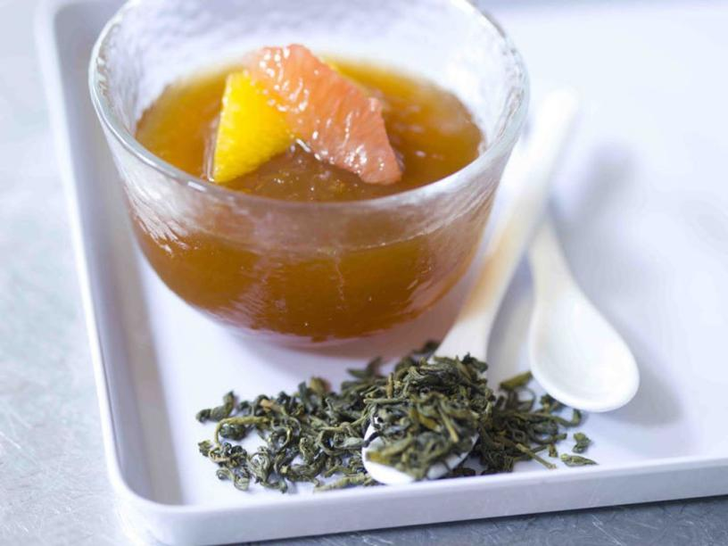

CAKE AU THÉ

| Pour 6 personnes |
| Difficulté |
facile |
| Préparation |
10 min |
| Cuisson |
45 min |
| Temps total |
55 min |
Ingrédients :
- 120 g de beurre demi-sel
- 100 g de sucre
- 2 gros œufs
- 150 g de farine
- 1 sachet de levure
- 50 g de lait
- 1 sachet de thé (Darjeeling, Assam, Ceylan, Earl Grey, etc.)
GELÉE DE THÉ VERT AUX AGRUMES

| Pour 4 personnes |
| Difficulté |
facile |
| Préparation |
10 min |
| Cuisson |
15 min |
| Prise au froid |
1h |
| Temps total |
1h45 min |
Ingrédients :
- Pour la gelée :
- 24 g de Thé vert aux Agrumes
- 3 feuilles de gélatine (5 g)
- 6 g de sucre muscovado
- Pour la salade et le sirop :
- 40 g de sucre muscovado
- 1 sachet de levure
- 50 g de lait
- Agrumes : 1 clémentine ou mandarine, 2 oranges et 1 demi-pamplemousse
PINTADE AU THÉ NOIR FUMÉ

| Pour 6 personnes |
| Difficulté |
moyen |
| Préparation |
20 min |
| Cuisson |
1h45 min |
| Temps total |
2h05 min |
Ingrédients :
- 1 pintade entière ou coupée en morceaux
- 10 cl d’huile d’olive
- 1 oignon des Cévennes
- 3 pincées de piment d’Espelette en poudre
- 4 g de gingembre en poudre
- 2 clous de girofle
- 1 badiane (ou anis étoilé)
- 2 poivres longs
- 100 g de kumquats confits
- 18 g de thé Lapsang Souchong des Grands Thés des Gourmets